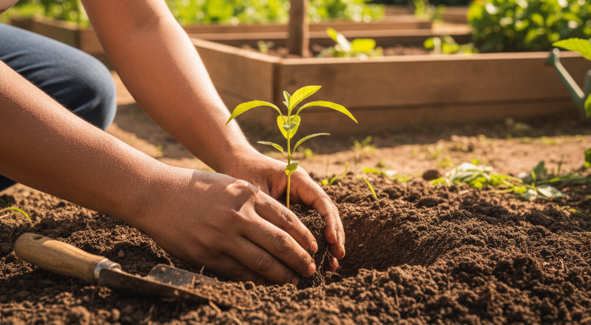

Meio Ambiente Consciente: Preservando Nosso Legado
O projeto Meio Ambiente Consciente é movido pela urgência em proteger os ecossistemas naturais para as futuras gerações. Nossa missão é clara: agir localmente para gerar um impacto ambiental global positivo.
Promovemos o bem-estar do planeta através de ações focadas e sustentáveis:
- Reflorestamento e Biodiversidade: Realizamos o plantio de espécies nativas em áreas degradadas, recuperando a fauna e a flora local.
- Limpeza de Praias e Rios: Organizamos mutirões de limpeza para remover resíduos, protegendo a vida marinha e os mananciais.
- Educação Ambiental: Conscientizamos comunidades e escolas sobre práticas sustentáveis, transformando o conhecimento em ação.
A saúde do planeta depende das nossas atitudes de hoje. Participe das nossas ações e ajude-nos a plantar um futuro mais verde e limpo.
Quero Ajudar Agora Voltar